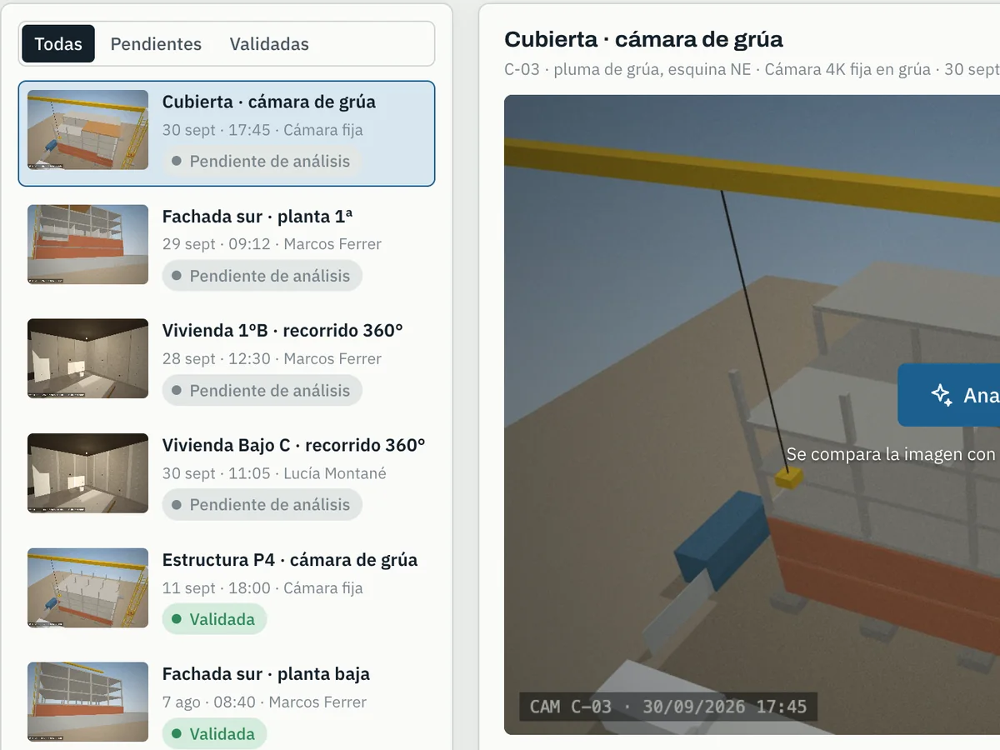
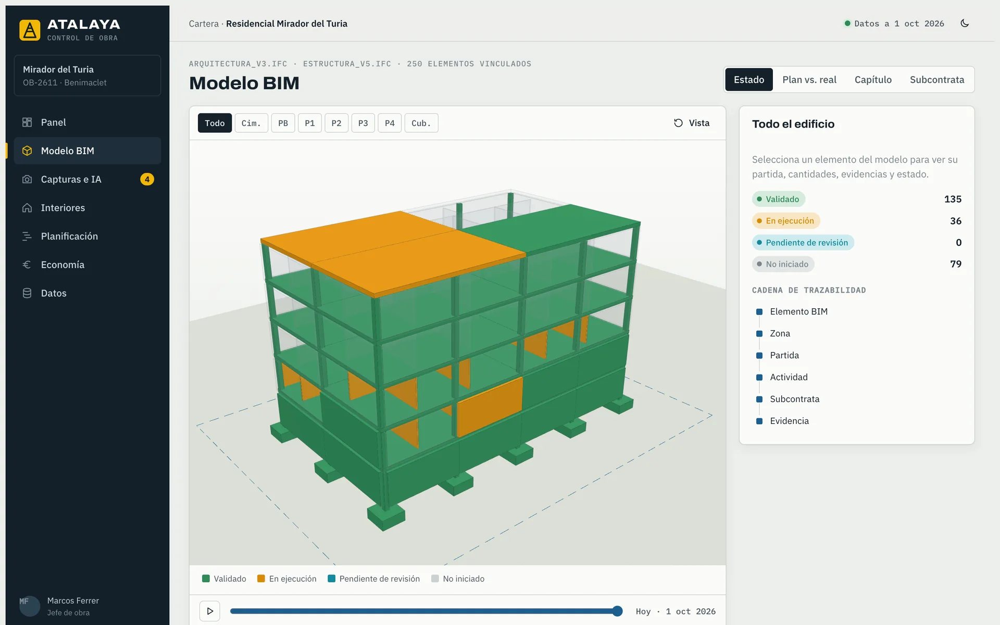
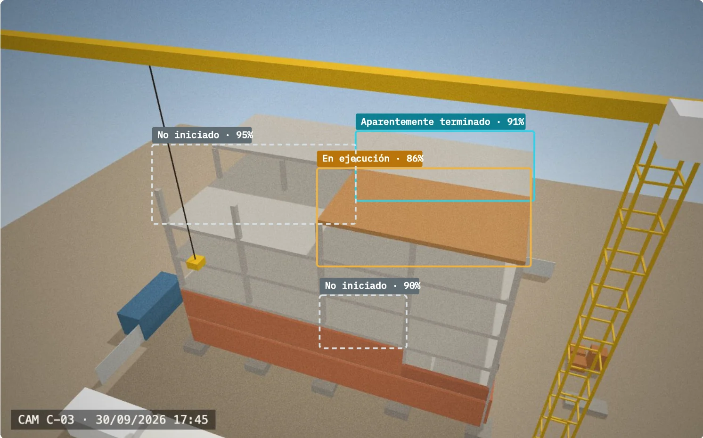
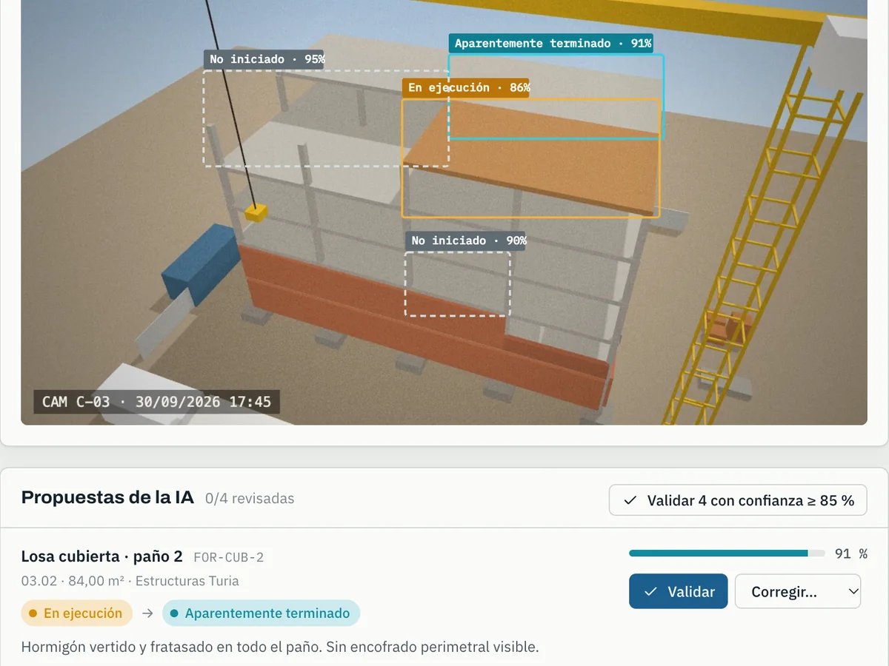
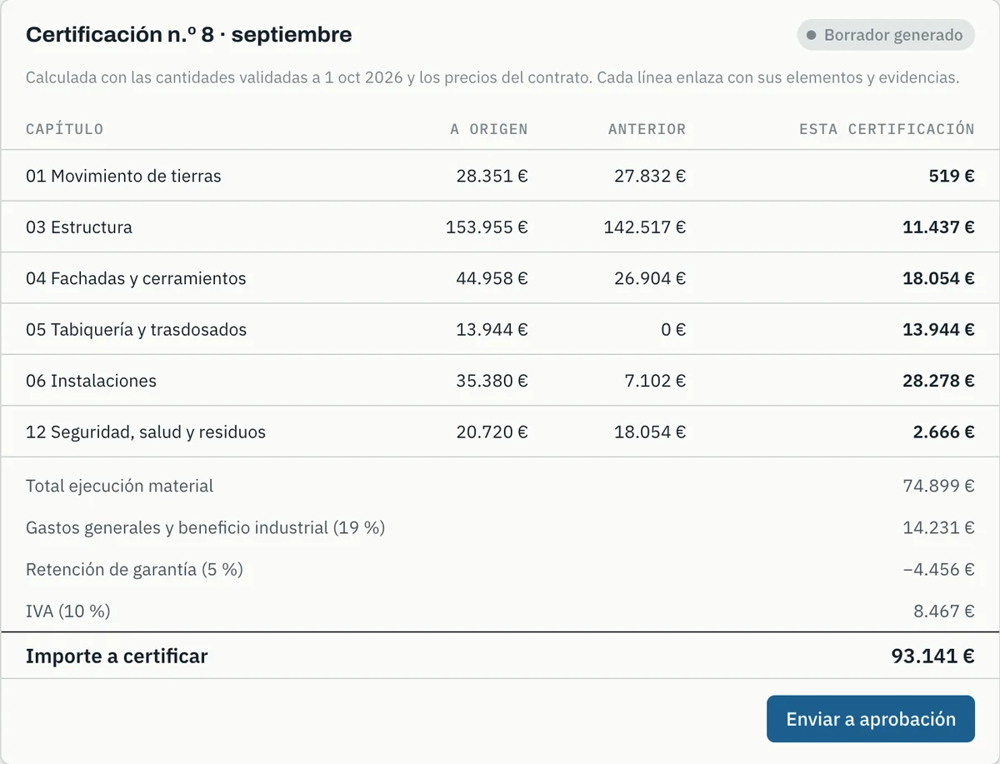
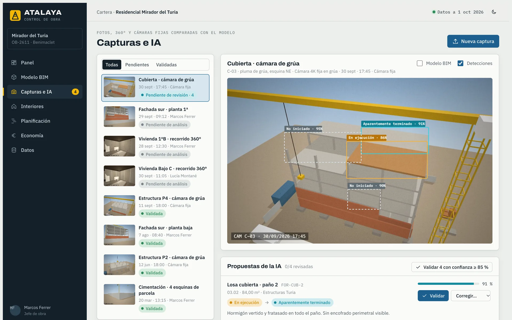
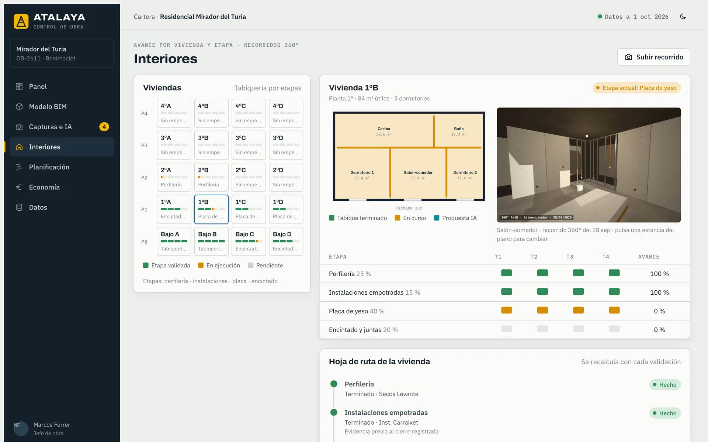
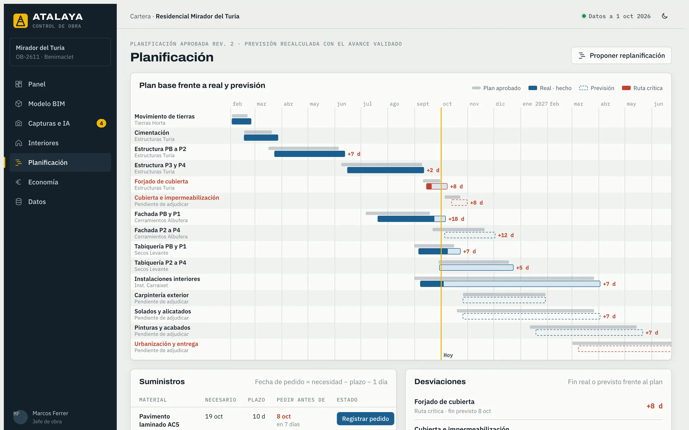
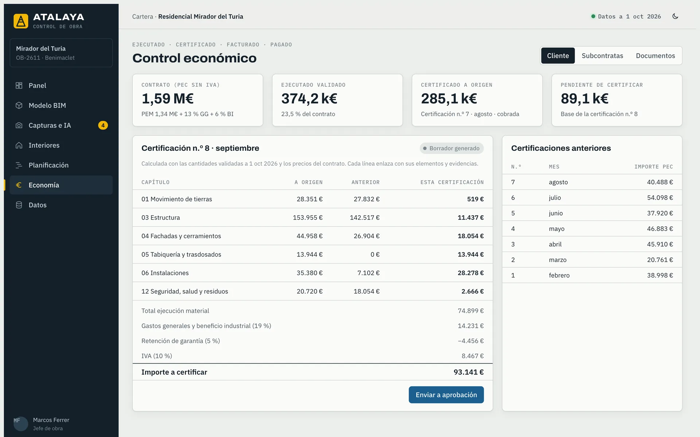

Capturar
Fotos desde puntos fijos, recorridos 360° y cámaras de grúa programadas. La PWA funciona sin cobertura y sube en segundo plano.

Producto · Control de obra · BIM + IA
Atalaya conecta el modelo BIM, las capturas de campo, la planificación y el presupuesto para estimar el avance, detectar desviaciones y preparar las decisiones de ejecución, suministro y certificación. La IA propone; una persona valida.

Cada perfil ve la obra a su escala, pero todos trabajan sobre la misma cifra validada. Se acabó conciliar la versión de la obra con la de la oficina.
Revisa las propuestas de la IA sobre sus capturas, registra pedidos a tiempo y llega al cierre con la medición hecha.
«¿Qué tengo que pedir esta semana?»
Avance real frente a planificado por obra, ruta crítica y previsión recalculada. Interviene cuando aún hay margen.
«¿Qué obra se me va de plazo?»
Cada línea de certificación enlaza con sus elementos, sus fotos y quién la validó. Menos discusión, más confianza.
«¿De dónde sale este importe?»
Ejecutado, certificado, facturado y pagado por subcontrata y partida. Las facturas que superan lo certificado, marcadas.
«¿Esta factura cuadra?»
Un protocolo de captura de menos de cinco minutos por planta alimenta todo lo demás. El resto lo hace el sistema, con una persona responsable en cada decisión.

Fotos desde puntos fijos, recorridos 360° y cámaras de grúa programadas. La PWA funciona sin cobertura y sube en segundo plano.

Cada imagen se sitúa en su punto de captura y se compara con la vista BIM equivalente. La IA propone estado y confianza, o se abstiene.

El jefe de obra acepta en bloque las de alta confianza y corrige el resto. Las correcciones alimentan la evaluación de precisión.

El avance validado recalcula la previsión, los avisos de pedido y el borrador de certificación a cliente y a subcontratas.
BC3, PEM y PEC, GG y BI, retenciones de garantía, acopios, contradictorios. Atalaya habla el mismo idioma que tu oficina técnica y tu administración.
Cargas el IFC de arquitectura y estructura. Atalaya extrae elementos, niveles, materiales y cantidades, audita la calidad del modelo y lo convierte para verlo con fluidez en el navegador.
Para cada captura, el sistema sabe qué elementos deberían verse desde ese punto. La IA devuelve, por elemento y etapa, un estado, una confianza y una justificación. Si no hay evidencia, dice «no observable».

La tabiquería no está «al 50 %». Está con la perfilería terminada, las instalaciones empotradas validadas y la placa en curso. Atalaya mide cada etapa con su peso económico en la partida.

Importa MS Project, Primavera o Excel. La línea base solo cambia con una aprobación; la previsión se recalcula sola con el avance validado, por el método del camino crítico.

Con las cantidades validadas y los precios de contrato, Atalaya prepara la certificación a origen al cliente y a cada subcontrata. Cada línea se puede recorrer hasta sus elementos y evidencias.

Todas las cifras salen de funciones deterministas, probadas y documentadas. La IA nunca calcula un importe ni una fecha: solo propone estados que una persona valida.
Σ (cantidad de elementos validados × peso de etapa)
÷ cantidad prevista
Las cantidades salen del modelo o del presupuesto, nunca de la foto.
Σ (avance físico de partida × importe de partida)
÷ importe total
Ponderado por presupuesto de ejecución material, como la curva de avance del panel.
fecha de inicio de actividad
− plazo de suministro − margen de seguridad
El margen es configurable por material y proveedor. El aviso llega con días de antelación, no el día que falta.
cantidad validada × precio de contrato
− certificado anterior − retención
− amortización de anticipo ± modificados
Propuesta, nunca pago: requiere la aprobación de un responsable autorizado.
Construido sobre estándares abiertos y componentes de código abierto de referencia. Sin dependencia de un visor propietario ni de una licencia de terceros por usuario.
Empezamos por una obra piloto con datos reales y pocas partidas visibles. Cuando los informes cuadran con vuestro control actual, se extiende al resto de la cartera.
◆ Criterio para avanzar: el equipo de obra lo usa cada semana y los informes cuadran con su control actual.
Se mide en tu obra, no en un folleto. En la fase 0 etiquetamos a mano un conjunto de capturas reales y lo usamos como referencia. Solo se muestran propuestas en los trabajos que superan el umbral acordado (por ejemplo, 90 % en los estados de los trabajos elegidos y cero falsos «validado»). El resto se sigue validando manualmente.
Empezamos por trabajos visibles y con etapas claras: cimentación, pilares y forjados por planta, fachadas, tabiquería seca en sus etapas y solados. Las instalaciones ocultas se documentan con una captura obligatoria antes del cierre, como hito de planificación.
No para empezar. Un móvil y un protocolo de puntos fijos son suficientes. Las cámaras 360° agilizan los interiores y las cámaras fijas en grúa permiten capturas programadas sin desplazamientos.
Es lo habitual. Atalaya calcula las cantidades a partir de la geometría y genera un informe de calidad del modelo en la carga: niveles, materiales, clasificación y elementos sin vincular. Lo que falta se completa con reglas o manualmente desde el visor.
Sí, con permisos por obra y por rol. La propiedad puede consultar el avance y las evidencias de cada línea de certificación; la subcontrata, su propia certificación y documentación. Los portales de cliente y subcontrata forman parte de la ampliación.